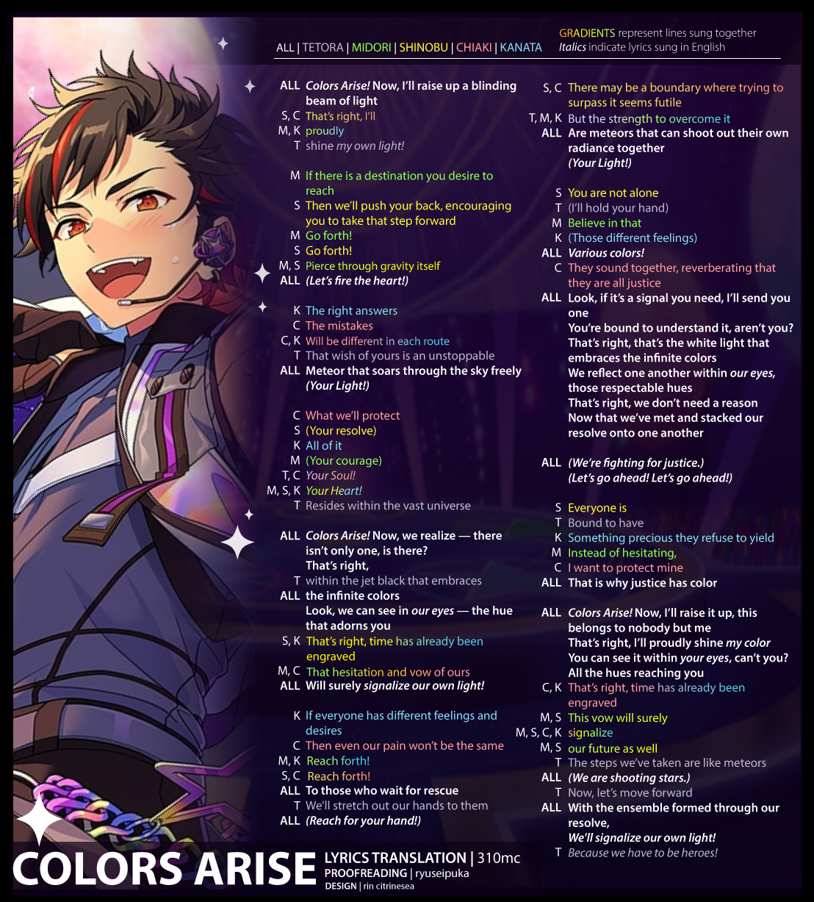

Kanata and Keito Infographic
Tetora and Keito Infographic

Red as Traditionalism in RYUSEITAI
Covers !!-era RYUSEITAI, RST-M and RST-N, how the color red constrains Tetora and Chiaki, and its ultimate dissolution.

AKATSUKI, Yumebutai and Trinities
Trinity symbolism in the masterpiece MV of Konjiki Senya Yumebutai.

AKARYUSEI Story and Survey Results
Investigating how many stories AKARYUSEI share together, and what AKARYUSEI-Ps thought were the answers. Full page here

Tenshou KAGETSU and Feng shui

Parallels Between Keito and Ibuki

Okinawa Arc
Infographics covering the stories of the Okinawa Arc (Updated October 2024). Includes the locations from different stories on a fictional map of Okinawa, Hoshijima, and the family trees of the Hoshijima trio.


Stylistic Similarities between RYUSEITAI Centers
Genres and instrumentation of RST center songs, as well as similarities to each other. Full page here.


Song Compasses
Placing AKATSUKI and RYUSEITAI songs along an arbitrary spectrum based off of vibes.

Colors Arise Lyrics Sheet
A color-coded lyrics graphic based off of 310mc's translation of Colors Arise.
Onmitsu! Ninjutsu Ondo!
A color-coded lyrics graphic based off of my translation of Onmitsu! Ninjutsu Ondo!.